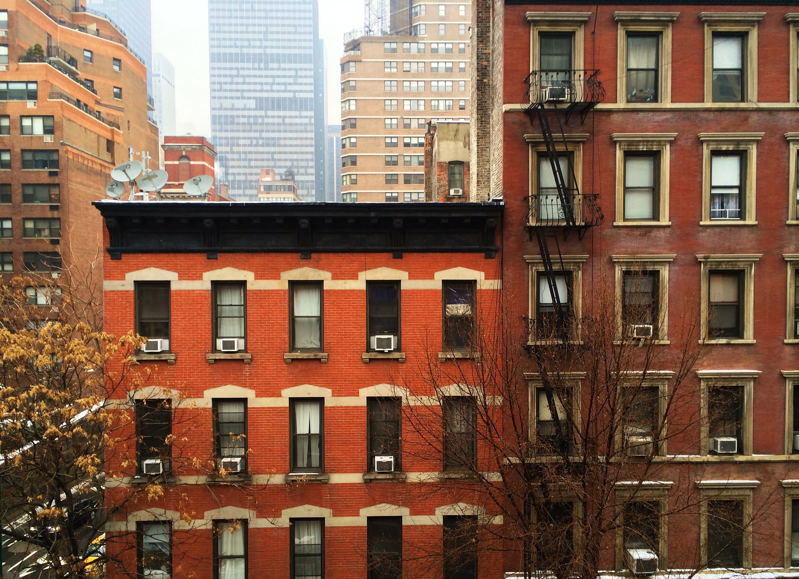

Building Heights of NYC
This simply displays the building heights of buildings in NYC
and deepens the color based upon how tall they are. This is a 3d
model of NYC, and upon clicking on each buidling, you can see some
additional data about it. This was completed almost completely based
on ArcGis's data and examples.
